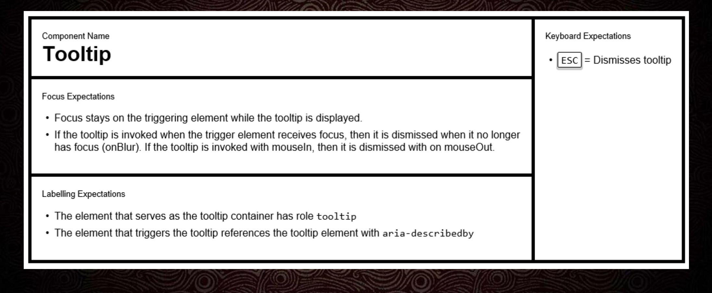
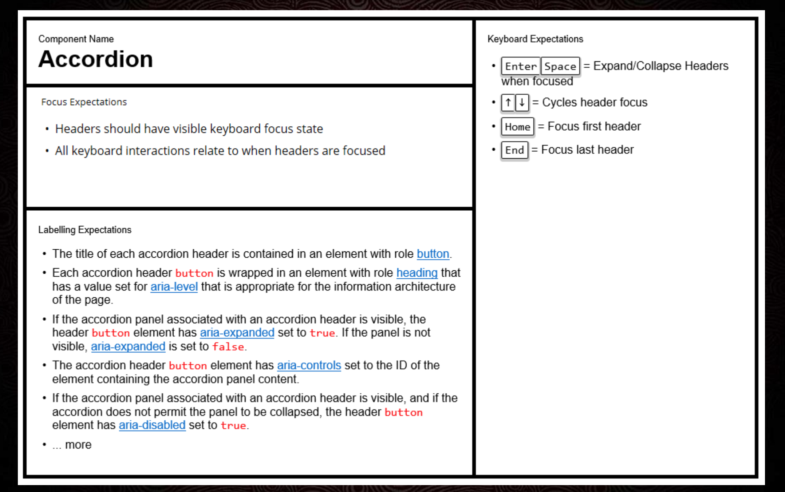

Inclusive UX: Techniques for Everyone
Derek Featherstone, Founder, Simply Accessible
The four divine beasts of accessibility
Pop-ups
Triggerable element that was previously hidden and it has content when visible. You should include aria labels that indicate on the button that will trigger the pop-up
Tool tip

Tabs

Accordion

HTML & CSS future things like the (details) value
- Tools and resources Accessibility for everyone book.
- Ebay Mind patterns accessibility patterns
- Inclusive Components Design
- Accessibility for Teams
- The A11Y Project
- Chorme tool axe
Books and resources
Nutrition Cards for Accessible Components
Find all the slides for this talk
Slide for this conference Day 3 Talk-12 The Four beasts of Accessibility